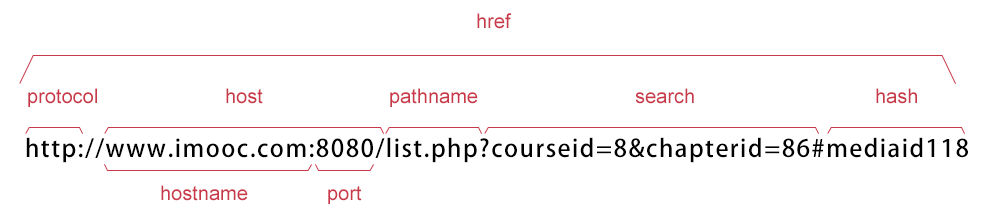

首先要知道Location这个对象以及这个对象中的一些属性：
href:设置或返回完整的url.如本博客首页返回http://www.cnblogs.com/wymninja/
host:设置或返回主机名和当前的URL的端口号。本博客首页返回www.cnblogs.com
hostname:设置或返回当前URL的主机名。本博客首页返回www.cnblogs.com
hash:设置或返回从井号（#）开始的URL（锚）。本博客首页返回 空
pathname:设置或返回当前URL的路径部分。本博客首页返回/wymninja/
port:设置或返回当前URL的端口号。本博客首页返回 空
protocol:设置或返回当前URL的协议。本博客首页返回 http:
search:设置或返回从问号 (?) 开始的 URL（查询部分）
location对象属性图示:图片来自慕课网

location的href属性存放的是文档的完整 URL，其他属性则分别描述了 URL 的各个部分。这些属性与 Anchor 对象（或 Area 对象）的 URL 属性非常相似。当一个 Location 对象被转换成字符串，href 属性的值被返回。这意味着你可以使用表达式 location 来替代 location.href。不过 Anchor 对象表示的是文档中的超链接，Location 对象表示的却是浏览器当前显示的文档的 URL（或位置）
var s = location.toString();
console.log(s);
#result
//http://www.cnblogs.com/wymninja/
Location对象的这些属性都是可读可写的，如果改变了文档的location.href，则浏览器会载入新的页面。同样如果改变了location.hash，则页面会跳转到新的锚点，但此时页面不会重载。
Location对象还有三个方法：assign()、reload()、replace()
assign():加载新的文档
reload():可以重新装载当前文档
replace():可以装载一个新文档而无须为它创建一个新的历史记录。也就是说，在浏览器的历史列表中，新文档将替换当前文档。这样就不能通过【返回】按钮返回当前文档了。
注意：
不要混淆Window对象的location属性和Document对象的location对象。前者引用一个Location对象，后者只是一个 只读字符串，并不具有Location对象的任何特性。Document.location与document.URL是同义的。但是，当存在服务器重定 向时，document.location包含的是已经装载的URL,而location.href包含的则是原始请求的文档的URL。
所以要获取浏览器URL中查询字符串的参数。也就是location.search部分。以慕课网图片为例就是?courseid = 8&cahpterid = 86中的8和86！！！！然后就利用如下代码：
function getQuery(name){
var reg = new RegExp("(^|&)"+ name +"=([^&]*)(&|$)");
var r = window.location.search.substr(1).match(reg);//从?之后开始匹配如getQuery(courseid)返回一个数组["courseid=8","","8","&",index:0,input:"courseid=8"]
if (r!=null) return unescape(r[2]); return null;
}其中:
对match不清楚可查阅我的博客Javascript string对象
unescape 对参数进行解码，如空格解码为20%。